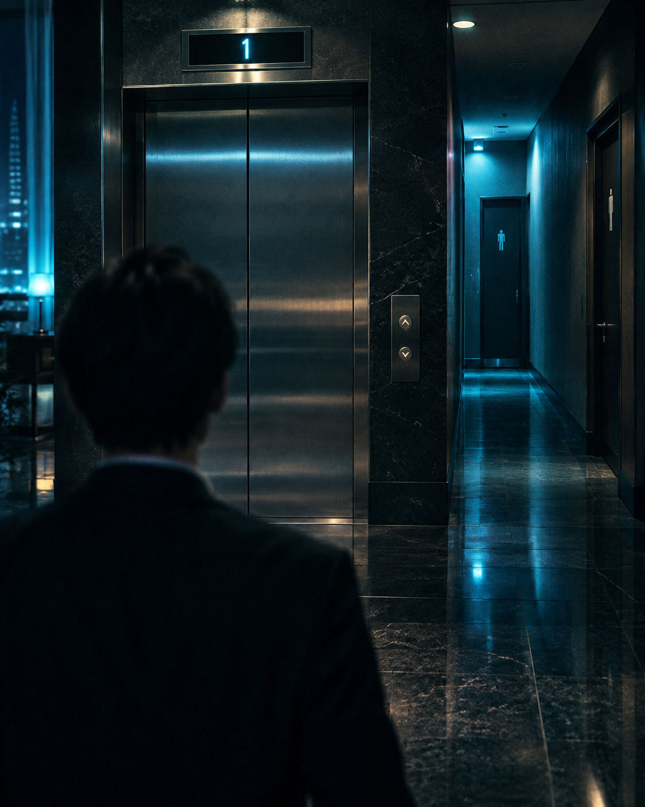

高層ホテルのベルボーイ、志村が休憩室で同僚の前島に打ち明けた。
「新人の久米、瞬間移動ができるのかもしれない」
「冗談だろ。あいつ、毎朝1時間も歩いて通勤してるぞ」
「昨日、1階でエレベーターを待っていたら久米が来たんだ。『お先にどうぞ』と言うから、先に乗った。6階のスタッフ用ラウンジの前で一息ついていたら、背後から『お疲れさまです』と声をかけられた。その間、エレベーターは一度もこの階で開いていない。扉の表示も、俺が降りた後はずっと1階のままだった」
「階段を使ったんだろ。体を鍛えているのかもしれない」
「それだけじゃない。今朝、スタッフ用トイレに入ったら無人で、個室も全部空いていた。用を足して手を洗っていたら、奥から水を流す音がして、久米がいつのまにか隣で手を洗っていた。入口は俺がずっと見ていた。誰も入ってきていない」
前島は少し考えて言った。「瞬間移動じゃない。ごく普通の理由で説明がつく」
久米が抱えている悩みは何でしょう？（漢字5文字）
行き詰まったら、一つずつ開封してください。
久米が「しなかったこと」に注目してください。エレベーターに乗った場面は一度もありません。
通勤は毎朝徒歩1時間。階段を使うのは、運動のためだけでしょうか。
共通点は「狭くて閉じた空間」です。トイレでは、戸を完全に閉めていなかった点を考えてください。
答えを考えたら、ファイルを開いて確認しましょう。
閉所恐怖症
久米は閉所恐怖症です。エレベーターは息苦しく感じるので、階段を使います。通勤を徒歩にしているのも同じ理由です。
トイレでは、人のいない奥の個室を、鍵をかけずに戸を少し開けたまま使っていました。入口から見ると、戸が少し開いた個室は「空いている」ように見えるので、志村は無人だと思い込んだのです。
「瞬間移動」という大げさな仮説が先に出るため、読者も目撃証言の数々を超常現象として並べてしまいます。普通の理由が一つあれば全部説明できる、という発想に切り替えにくいのが罠です。
掲載コンテンツは娯楽を目的とした推理クイズです。事件・登場人物・団体等は、クイズとして再構成された架空の設定を含み、実在の人物・団体・企業等とは関係ありません。
© 未解決ファイル - 図面と証拠で解く推理クイズ -